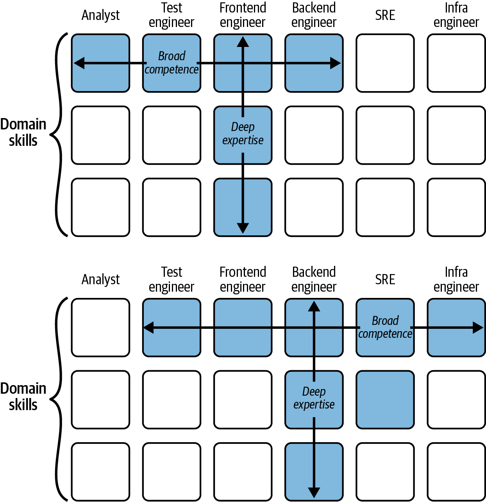
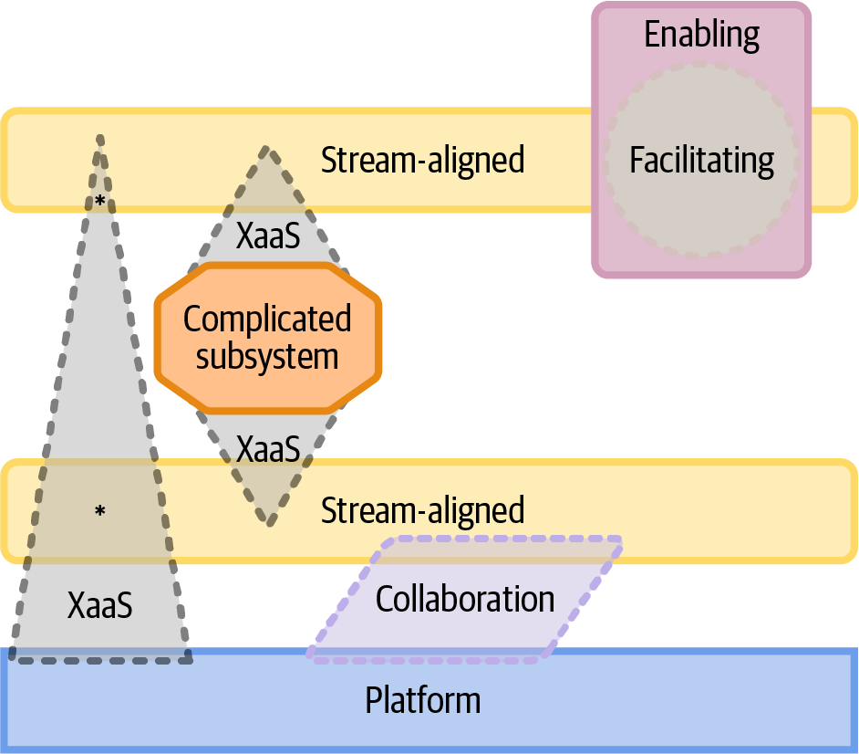

In this chapter, I’m going to talk about the type of organization that enables a microservice-based architecture: it should be loosely coupled and made up of autonomous teams, each with a clear area of responsibility that maps to one or more microservices.
Within an organization, teams are the fundamental units of software delivery. We’ll look at what makes for an effective team, and I’ll describe the types of teams you should have in place, drawing heavily on the definitions in Matthew Skelton and Manuel Pais’s Team Topologies,1 which match very closely to the types of teams we had adopted at the FT as we moved to a microservice architecture.
But first, let’s talk about organizational culture.
A microservice architecture is loosely coupled, so you need your teams to be loosely coupled as well. That means setting up those teams so that they can get their work done without needing coordination with other teams. The reward for this is the fast flow of change, delivering frequent business value—but only if the organizational culture can let that happen. What characteristics of a culture support autonomy and a fast flow of change?
Information is shared, not hoarded.
People are encouraged to try out new things.
Teams are encouraged to work independently and make their own decisions.
The organization is flexible and able to respond quickly when things change.
Bringing these all together, we have the Westrum Model: what the sociologist Ron Westrum describes as “generative culture.”
In an open organization, information is shared, not hoarded. That means defaulting to open: teams should be able to find out information that impacts their own ability to get stuff done. For example, they should be able to see the current status of features another team is working on that they are going to be interacting with. They should be able to find enough information about APIs and interfaces to get started using them.
I am focused here on openness at an organizational level. Is this the kind of organization that willingly shares information or one that operates on a hierarchical or need-to-know basis?
That doesn’t mean I’m proposing teams share every bit of information about their systems. Information hiding, where you share details of the interface but hide the implementation details,2 is a good principle for software engineering—the less that people know about the internal parts of a system, the less likely that you will get unexpected and unwanted coupling.
The aim should be to decouple the broadcasting of the information and the use of it. You want people to be able to answer their own questions without having to book a meeting or have an email conversation with you.
To become an open organization, you need to set the expectation of sharing information. No one should ever be punished for doing that, even if the news they share is bad!
As someone who used to be responsible for production support at the FT, I did everything I could to encourage people to tell us if there was a problem in production. That meant making it easy for anyone to raise an incident, asking people to do that even if they weren’t 100% sure, and ensuring a culture where everyone’s first reaction was to help, not to blame. This is also important for helping people feel comfortable with supporting their own code in production, which I will talk about in Chapter 8.
In a learning organization, people are encouraged to try out new things. This can be new technology, new processes, or new ideas for products or features. Giving teams time and space for this can pay off in many ways.
It’s important to recognize that sometimes things won’t work out. If you are early adopters of an innovative technology, you may see the benefit for your business—or you may find it’s not production-ready, or that the company gets acquired and that product gets shut down (that has happened to me!).
Creating a culture of innovation means accepting a reasonable level of risk, and making it safe to fail.3
When things go wrong, the organization should seek to learn from that, rather than looking for someone to blame. That also includes when things go wrong in production (I’ll talk about learning from incidents and blameless incident reviews in Chapter 8).
To become a learning organization, you need to treat learning as strategic. That means allocating a training budget (and spending it), setting aside time for learning, and demonstrating that the organization thinks learning is important—for example, by including it in assessments of whether people are ready for promotion.4
One team I led at the FT had “10% time” every two weeks that gave people space to experiment. My colleague Sophie Caramigeas set the framework for this based on her experience running this elsewhere, with great results:
No one had to take part. If you didn’t have an itch you wanted to scratch, you could carry on with other work.
You had to share what you were going to dig into ahead of time. This was to help people make a choice and focus on one thing rather than jumping around.
Everyone had to do a five-minute show and tell the next week, with a total acceptance that sometimes this would be “I tried this and couldn’t get it working.”
We got some great ideas for features, built tools that automated away pain, and found better technology options. We also quickly found out that some things were not going to work for us. One major benefit for me was that we avoided lots of discussion about whether to adopt alternatives, because people could try them out in 10% time. I consider the times where people came back and told me “X isn’t as good as what we have now” as equally valuable to the times where we found a great alternative, because we found out quickly.
The authors of Accelerate say, “The goal is for your architecture to support the ability of teams to get their work done—from design through to deployment—without requiring high-band-width communication between teams.”
That means you need teams to be autonomous and empowered, so that they are able to work independently and make their own decisions (within some set of constraints).
This is about trust. The organization needs to trust that teams will make the right decisions, removing barriers between the team and production.
This doesn’t mean allowing a complete free-for-all. It means, for example, moving from needing sign off from a change management team for a change to go to production, to allowing teams to deploy to production while logging exactly what change happened, why, and who applied it.
The people who will best understand the risk of making a particular change are the ones who are making it: the development team.
The next few chapters cover how to empower teams while maintaining the things the organization cares about, like quality, security, and cost control.
The flexibility of your organization is important for a number of reasons.
You are almost bound to get the system design wrong at first, so you should make sure your organization can handle that. This means having an organization that expects and can adapt to change. You’ll need to have systems in place that reward managers for keeping their organization lean and flexible. This is easier said than done, since leaders are very reluctant to reduce the headcount of their organization when that will also reduce their area of influence!
Beyond that, modern organizations need to be able to change in response to business, technology, and regulatory changes. Think about the introduction of GDPR regulations, the move to the cloud, and most recently the rise of large language models (LLMs). If you aren’t able to respond rapidly, your competitors might.
Bringing all of this together, these characteristics of an organization are what the sociologist Ron Westrum describes as a “generative culture,” part of a model of different organization types he developed from research on human factors in system safety.
Westrum identified three types of organizational culture, based on the organization’s style of information processing:
Information is hoarded for political reasons.
Information can languish because of barriers between departments.
Information flows well, and elicits prompt and appropriate responses.
The research by DORA, documented in Accelerate, used survey questions based on Westrum’s model.
Westrum’s theory is that organizations with a better information flow function more effectively, and the DORA results bear that out. They show that “in organizations with a generative culture, people collaborate more effectively and there is a higher level of trust across the organization and up and down the hierarchy.”5
This is possible because a generative culture:
Shows high levels of cooperation
Doesn’t punish messengers who bring bad news
Shares risks through sharing responsibilities
Encourages a break down of silos
Doesn’t blame individuals for failure, but looks to learn from it
Encourages innovation and experimentation
Individuals are “encouraged to speak up, think outside the box, and to act as fully conscious participants in a great cooperative enterprise.”6
It is true, of course, that changing an organization is hard: it can take months or even years. You may also be thinking that changing the culture of your organization is above your pay grade, but, while you will struggle to change culture without a leadership team that understands the need and supports the efforts, changing the way people work will impact your culture, and that is something we can all contribute to.
John Shook’s case study on introducing Toyota production and management systems into a US car plant, with transformational results, concludes that the way to change culture is to change what people do rather than attempting to change how they think. Accelerate found that applying specific technical and management practices—continuous delivery and lean management—can indeed predict a move toward a generative culture.
If you can introduce a practice or process that works to foster those behaviors associated with generative culture, you can kick off a positive change in culture, whatever your role.7
For example:
Encouraging people to work in cross-functional teams, and to collaborate with other teams for specific pieces of work, can increase cooperation and break down silos.
Blameless incident reviews can show people it is safe to share bad news, and encourage the organization to learn from mistakes.
Hack days, mini-conferences, and 10% time to work on experimentation, along with a willingness to try things out as a result, can foster a learning and innovation culture.
Having every team responsible for quality, reliability, and security makes sure that those risks aren’t seen as the responsibility of a separate team (although having expert teams to advise and support in these aims is still a good idea—and discussed further in the next few chapters).
Changing what people do changes the way they think, and even small changes can have a big impact on culture.
Effective software delivery comes from teams, not individuals, because we need to take in large amounts of information, solve complex problems, and adapt rapidly to change. There is too much involved in modern software development for individuals to work effectively.
For a microservice-based architecture, what should those teams look like, how should they be grouped together, and how should they operate?
For the kinds of work we do in software engineering teams—creative, interesting, and self-directed—the best-performing teams are those where motivation is intrinsic rather than extrinsic.
Extrinsic motivation comes from outside the team. The reward is separate to the task itself—for example, bonuses, pay rises, and promotions.
Intrinsic motivation comes where someone wants to accomplish the task because that in itself provides value to them. For example, they see that it will have a positive impact.
Dan Pink’s book Drive8 is about what motivates us. He identifies three components: autonomy, mastery, and purpose.
Do you have the freedom to decide what you are going to do and how? Do you have the opportunity to improve your skills and learn things? And do you feel you are working toward something worthwhile?
But what do these three motivations look like for a software development team? Essentially, an autonomous team is a team that can do all the major parts of their job without having to coordinate or get permission from anyone outside the team. That means being able to write, test, and deploy code without needing to check in with people outside the team.
Having a cross-functional team is necessary, but not sufficient! I’ll return to autonomy in the next chapter, to discuss how an organization can enable autonomy in teams through the processes and practices they put in place.
Mastery begins with work that is neither too hard nor too easy, and depends on a continuous challenge. Each time you learn one thing, you have the opportunity to build on that.
Purpose is provided through the outcomes the team is working toward. Team members need to understand the shared goal, and see the value in it.
John Cutler’s blog post “12 Signs You’re Working in a Feature Factory” describes the opposite type of team, “just sitting in the factory, cranking out features, and sending them down the line.”
These are teams where, among other things:
Developers work through a list of features prioritized by someone else, rather than targeting agreed outcomes, and they don’t see a connection to business outcomes.
No one really knows whether a feature was “successful.” Once it ships, it doesn’t get iterated on, and it is rarely acknowledged as a failure or removed.
“Resources” get moved from team to team and everyone is overutilized; there is no slack.
Shipping features is the only measure that counts, incurring technical debt and making it hard to spend time on refactoring and improvements.
This way of working is clearly demoralizing for teams, but it’s also bad for business! Teams that understand and are connected to the business goals will do a lot better.
I do want to point out that there are additional factors in play around motivation and effective teams. If you have autonomy, mastery, and purpose but you don’t have psychological safety and inclusion, you won’t have an effective team. You need to feel safe and valued to be able to contribute.
Aligning teams to business domains is critical when you are adopting a microservice architecture. You need teams to be able to do the majority of their work without having to coordinate with another team, and if a business domain is split between teams, it will be hard for them to work independently.
There can be a hierarchy here, so that multiple teams are aligned to the same business domain (for example, content publishing) but they are assigned to subdomains within that to reduce coupling. This might mean publishing core content (articles and images) versus publishing metadata for that core content.
As discussed in the last chapter, while there are other possible boundaries between teams—for example, technology used or location—my strong recommendation is to use business domains as the main lens.
As discussed in Chapter 3, you cannot keep adding people to a team and still have an effective team. In practice, I’ve found that teams around five to seven people in size work best. This fits with what Skelton and Pais say in Team Topologies (they recommend five to nine) and with the idea of a two-pizza team already mentioned.
Smaller than this, and you face challenges to keep making progress when some people are out on holiday or off sick (and to support your systems, both in and out of hours). You will also find it hard to be truly cross-functional.
Much larger than this, and communication within the team becomes a challenge (as I touched on in Chapter 3). Teams need to make group decisions all the time: should we use this framework? How will we tackle this feature? Which is our priority between these three things we want to do? Finding consensus when your team is large becomes difficult.
Where I’ve seen teams getting up toward 9 or 10 developers, they’ve ended up dividing into subteams, whether those subteams are officially recognized or not. That can be OK, but don’t expect this to work like a single, coherent team.
I think that if you find it impossible to take your entire team out for lunch, because you can’t get a consensus on where to go, and can’t fit around a table—this is a sign your team is too big.
Large teams also pose a challenge around people management, if that is aligned to team structure in your organization, i.e., the tech lead manages the engineers—once you get beyond five or six engineers in a team, you are moving toward too many people for one person to manage effectively. I know plenty of people do manage more people, but if you want regular 1-2-1s and effective coaching and technical leadership, that starts to be very hard.
Trust is also a factor in team size: it’s critically important for high-functioning teams because those teams need to collaborate to deliver work. There is a limit to how much of delivering a feature can be worked on in parallel. Fred Brooks noted way back in 1975 that adding more people to a late-running project just makes it later, although that hasn’t stopped this exact thing happening to me in the past!9
For software development teams, high trust within the team is a strong indicator of team performance. Google’s Project Aristotle researched the characteristics of high-performing teams and found that psychological safety—feeling safe to take risks and be vulnerable in front of each other—was by far the most important dynamic in the team.
Going back to Conway’s Law, I will just note that these natural limits on team size put constraints onto the systems we design. They need to be divided up to match what a standard-size team can handle.
To be able to take a feature through to production without having to hand off to other teams—handoffs that will inevitably slow you down—you need cross-functional teams, i.e., ones where all the necessary skills are inside the team: analysis, design, coding, testing, setting up infrastructure, deploying, and operating the system. This goes beyond engineering; depending on what you are building you also need some or all of product management, design, user experience, and data science skills within the team.
When I first joined the FT, I spent maybe 80% of my time designing and writing code. That code would be handed off for testing by the QAs (quality assurance engineers), and then be packaged up and deployed by someone else. We also had an infrastructure engineering team that would set up servers, build pipelines, etc. I might have to wait for a QA to be free to test my code, and then have to go back and fix any issues they found. I definitely had to wait for the code to be deployed as that happened at most once per month.
The move to cross-functional teams at the FT meant that engineers like me would take on infrastructure tasks like setting up servers and build pipelines. We’d also do a lot of the testing, via automated testing, and our QA teams moved to focus more on exploratory testing—good QAs overlapped a lot with business analysts in that they had a great understanding of the domain and the customers.
When we talk about cross-functional teams, it’s important to think about what skills can sensibly be in that team.
You should be able to deliver a feature to production the vast majority of the time using just the skills in your team. That means requirements gathering, user research, analysis, design, architecture, coding, testing, and deployment with appropriate observability built in.
Given the size of a typical team, this means people have to be able to tackle more than one part of that journey to production. They don’t need to be experts in all of them: at the FT we spoke about having “T-shaped” engineers (see Figure 5-1), who have depth of experience and skill in one area, along with experience across other parts of the process. This could be an infrastructure specialist who can also code, developers who can set up basic infrastructure and write automated tests, or QAs who can analyze what is needed from a feature, write automated tests, and deploy features to production.

The important thing is for engineers to be open to learning about skills outside their current role—I actually like the idea of a “Broken Comb”-shaped person, where people are looking to learn skills in any area, so there may be multiple roles where they have significant expertise. This is great for maintaining flexibility within a team. It also makes it more likely that when you look at the team as a whole, you find all the necessary skills are covered.10
The more of a mix of interests and skills on the team, the more likely you are to find that people are able to both hone a skill and learn new skills from experts, giving them the motivation of mastery.
I’ll talk in Chapter 6 about the things an organization can do to help teams develop the full set of skills needed to be autonomous.
Autonomous teams need to have a strong level of ownership of the services they work on. Strong ownership means you make the decisions about how to structure your code, what level of testing is needed, when to release a change, and more.
Strong ownership makes it more likely that the code you write will be maintainable and supportable, and that people will invest in improvements. If more than one team is making changes to the same part of the system, it isn’t clear who is responsible for the results of those changes. That has issues when things go wrong in production, but also for working out who needs to upgrade a dependency that’s been flagged as insecure. I’m going to talk about this a lot more in Chapter 9!
If the system is loosely coupled, needing a change from another team to achieve your aims should be fairly rare. Strong ownership means that when such a situation does arise, you can’t just go ahead and make that change. There are lots of ways to approach this though. Collaborating—even pairing—on a code change is going to ensure that the team that owns the code properly understands the change and reduces the chance of unexpected effects. You can take a more asynchronous approach and have the owning team review the proposed code changes: this is most suitable for simple changes (but I’d probably argue that every pull request review should be for something small and simple to understand!).
Strong ownership by a team does not mean strong ownership within a team. You really want the whole team to understand all the systems they are building and to feel collective ownership of the code. Otherwise, you run the risk that some changes can’t be made because the “owner” is away that day.
A project-based approach to software development doesn’t allow for long-term purpose or strong ownership. Projects run for a specified period of time with a specified outcome. After the project is complete, who owns the software?
Product-thinking assigns teams longer-term, with a lot more autonomy to decide the outcome they are targeting. It provides that sense of purpose to the team. The team owns the product until it is decommissioned, although the number of people actually working on it will vary considerably over time.
Products not projects means teams need to be around for a while. They need to be long lived.
Teams should also be long lived because it takes time for a team to become effective. The people in the team need to get to know each other and develop ways of working. This is the “forming, norming, storming, performing” model.11
To expand:
The early stages of getting to know the other team members. People are on their best behavior.
As real work starts, the team may show signs of conflict over hierarchy and ways of working.
Increasing acceptance of each other.
Norms and roles are established, and the team can focus on their goals and performing well.
While team makeup is unlikely to be completely static, maintaining a core of people over time and keeping that team aligned to the same domain is much less disruptive than, for example, setting up new teams each quarter.12
There is a limit to how much information anyone can maintain in their head, and the same applies for a team. Once you exceed the cognitive load of a team, they won’t be effective. Team members won’t feel they have the time to bring another member of the team up to speed on something new, so you’ll start to see bottlenecks where only one person knows about some part of their estate.
Where the team has more than one responsibility, excess cognitive load will mean lots of context switching as you move from urgent task to urgent task.
Finding the right boundaries between teams, as discussed in Chapter 4, is key to keeping cognitive load sustainable. No team should have to manage multiple complicated subsystems.
But cognitive load isn’t just about the features and products you are building. Team Topologies introduced the idea that total cognitive load matters for software development teams, and the discussion there goes beyond whether a team has too much work. It’s also about the types of work, both in terms of the impact on the team and the approaches you can take to mitigate overload.
There are multiple types of cognitive load:13
Related to the task at hand. For example, understanding the domain problem space.
Fundamental to the problem space. For example, the inherent difficulty of writing a program in a particular language.
Not inherent. For example, how you check in code, how you build it. It doesn’t improve your ability to solve the problem or build up your skills.
For intrinsic load, you can invest in training, set up guilds of practice, and generally make it easier for people to build up their skills.
For extrinsic load, you can invest to remove it, for example, through documentation and automation. Building a developer platform is one way to do that, and will be discussed in Chapter 7.
Reducing these types of cognitive load will allow teams to take on more of the germane cognitive load: the stuff that actually delivers business value.
In 2012, Google’s Project Aristotle carried out research into what made certain teams more effective than others.14
They found five key dynamics:
Does the team feel safe?
Can the team count on each other?
Do team members understand roles, plans, and goals?
Do team members feel the work is important to them?
Do team members feel the work matters?
Psychological safety, which the research found to be the most important factor, means a team feels safe to take risks and be vulnerable in front of each other. This is another reason for long-lived teams, because this level of trust in each other takes time to develop.
Dependability is about being able to count on the other team members to work at a high level of quality and get things delivered.
These two things together tell you whether this is a team with a high level of trust in place.
The remaining three key dynamics all relate to having a clear purpose, both as a team and as a person. Those key motivational aspects from Dan Pink again!
Team Topologies suggests forming teams of 5 to 9 people, in groupings of 50 to 150.
Why do we need these groups? One reason is about the flow of information. Meetings of team leads have the same constraints as meetings within a team: they won’t be effective if there are 20 people in the meeting. Once you get to a certain size, you will have too many teams for them all to be part of a single organization.
The second reason is that you will probably need those groups to be able to manage some important tasks around supporting your code in production. It’s hard to maintain a 24/7 rota with a single team of developers. I will talk about this more in Chapter 8 because there are challenges in navigating “You build it, you run it” while keeping team sizes down!
The team I’ve described in the previous section is autonomous, empowered, cross-functional, and T-shaped. It should be able to work with a minimum of coordination or waiting on other teams.
But I also said that the team can’t be too large!
A five-person team can’t have expertise in all the things that matter—such as accessibility, observability, and security—without impacting their ability to deliver value to the business. And “full stack” has to stop somewhere! We can’t expect engineers to know everything down to the kernel.
Anything that needs to be done for every release of code, you probably need each team to be able to do. Beyond that, you don’t want every team to have to solve the same problems, to have to build their own tools and abstractions to spin up servers and deploy code, and to sort out their own observability tooling and write things to manage costs and compliance.
To be able to focus on meaningful work, to keep risk under control, product teams need to be able to look to others to make it easy for them to make progress (by reducing the amount of extrinsic cognitive load they are under) or for specific expertise. Maybe you need to add a WAF in front of your website, or you’re about to try your first serverless project. These are needs that are best served by specialist teams that provide help and assistance.
Team Topologies is one of those books that really struck a chord with me: it provides powerful tools for thinking about your organization, focusing on what you can do to optimize for a fast flow of value.
The authors make the case—and I agree—that there is a limited number of fundamental types of teams needed for building and running modern software systems. I recognized these from my own experience at the FT, developed in over a decade of doing DevOps and microservices. Team Topologies gave me the language to talk about this, and suggested places where we could go a little further in our own approach.
There are four types of teams mentioned in Team Topologies:
Aligned to a single, valuable flow of work
Specialists in a particular product or technology domain, helping stream-aligned teams to develop new capabilities
Responsible for some part of the system that depends heavily on specialist knowledge
Providing internal services that accelerate delivery by stream-aligned teams
Figure 5-2 illustrates these team types and their interactions using a team modeling approach defined in Team Topologies. The interaction types will be described in Chapter 6.

While we haven’t used the term yet, the teams we’ve been talking about throughout this chapter are stream-aligned teams. This team structure applies to the majority of teams in your organization and encompasses teams that are working on products.
Each stream is a continuous flow of work, related to a specific business domain or organizational capability. Each team should be aligned to a different stream, which provides clarity of purpose and responsibility.
Stream-aligned teams will be able to take a feature from initial exploration right through to production. To do this, they need to be able to:
Design and architect
Code
Test
Provision and deploy
Ensure their applications are secure and monitored
Run their code in production
While the stream-aligned team type is the primary team type in an organization, other team types are needed too. The purpose of these other types of teams is to reduce the burden on the stream-aligned teams.
Enabling teams are specialists, skilled in particular domains, and their mission is to help stream-aligned teams to develop new capabilities. Stream-aligned teams should be focused on delivering value to the business. They may not have time to learn about and practice new skills, but in any case, you don’t want every stream-aligned team to be doing this.
An enabling team can do the research, try things out, and then work with stream-aligned teams to help them adopt new technology or practices. They act as consultants, and like consultants, they bring in new ideas and work alongside teams for a limited period to transfer that expertise.
The enabling team should do the work to make sure any new tools comply with organizational policies or principles. The aim is to increase the autonomy of stream-aligned teams through growing their capabilities.
Examples of the kinds of technologies an enabling team may focus on include deployment, build, and continuous delivery; observability; security engineering; or web components and design systems.
Enabling teams can reduce the intrinsic cognitive load that a team is under by sharing their skills and expertise.
Complicated subsystem teams are also specialists. The difference from enabling teams is that rather than exploring capabilities, they instead build and maintain specialist subsystems. For example, that might be a system that does machine learning, or has a complicated set of algorithms.
Where many stream-aligned teams interact with this complex subsystem, it isn’t feasible to embed specialist knowledge in each of those teams, and so a separate team builds the subsystem, focusing on what those stream-aligned teams need.
I’m not going to say much more about this team type as it is specified as optional, and I don’t feel that I saw it in action at the FT.
The purpose of a platform team (in fact, this is almost always a group of teams and Team Topologies practitioners are moving toward using “platform group” or just “platform”) is to provide internal services that reduce the extrinsic cognitive load for stream-aligned teams, so that people don’t need, for example, to remember a set of commands or spend time finding out how to configure a database backup.
They are service providers and the services they build need to be easy to use, reliable, and fit for purpose. They should focus on creating services that stream-aligned teams can use without needing help. This means building well-documented APIs and self-service tooling.
A good platform should allow stream-aligned teams to do the right things, in the right way. It should reduce the complexity of the underlying systems without abstracting too much away, because teams may need access to the underlying functionality.
If you hide too much away, you run the risk of teams failing to adopt the platform and instead developing their own approach.
The aim should also be to build just enough platform. Team Topologies calls this the thinnest viable platform, or TVP. My experience is that this is absolutely the right instinct. Build what your customers need, and no more.
For a microservice architecture, which needs to be loosely coupled, you need an organization that is loosely coupled too. It should support the ability of teams to get work done; to deliver a fast flow of changes.
A generative culture is one where information flows well, and where individuals are encouraged to speak up and to fully participate, and this is the type of culture you should be aiming for.
Teams that will be effective within that culture are ones that have a clear purpose and high levels of autonomy, meaning they can do most of their work without having to coordinate with other teams. They should be cross-functional, with the skills to build, release, and support their own code. To be successful, there should be 5–10 people in the team, and the team should be long-lived and aligned to a product, rather than formed for a specific project.
The team should be empowered to make their own decisions. Both empowerment and autonomy develop in a culture where there is trust and psychological safety.
To be able to focus on meaningful work, and to keep risk under control, product teams need to be able to look to others to make it easy for them to make progress. To fully optimize your teams for a fast flow of value, you need just four team types: stream-aligned (the majority of teams), enabling, complicated subsystem, and platform.
This chapter has discussed how to build teams that will be able to act autonomously and the kind of culture that supports that. The next chapter digs, in detail, into the processes and ways of working that allow those teams to act autonomously.
1 Matthew Skelton and Manuel Pais, Team Topologies, 2nd ed. (Portland, OR: IT Revolution, 2019).
2 An idea that was first described by David Parnas in 1972, in his paper “On the Criteria to Be Used in Decomposing Systems into Modules”.
3 If nothing you try fails, it’s likely you are not being innovative enough.
4 Google has some great suggestions on how to implement a learning culture.
5 Accelerate, Chapter 3.
6 Ron Westrum, “A Typology of Organisational Cultures”.
7 Google has more detail on how to foster a generative culture in its online documentation around DevOps capabilities.
8 Daniel Pink, Drive: The Surprising Truth About What Motivates Us (Edinburgh: Canongate, 2009).
9 This is now known as Brooks’s Law. Fred Brooks, The Mythical Man-Month: Essays on Software Engineering (Boston: Addison-Wesley, 1995).
10 Emily Webber has a nice team exercise to map out skills, using the more positive term “Capability Comb.”
11 This comes from Tuckman’s group-development model.
12 I’ve seen that approach, and each reorganization led a few people to decide to move on.
13 Cognitive load theory originally comes from a study of problem solving by psychologist John Sweller.
14 “The Five Keys to a Successful Google Team,” November 2015, available as a web archive version.
15 This is such an antipattern. If you do this, you will spend a lot of time arguing about the severity or priority level of individual incidents, rather than seeking to learn from them, and you may not even hear about some incidents until everything is on fire, because people are hoping to save their bonus!